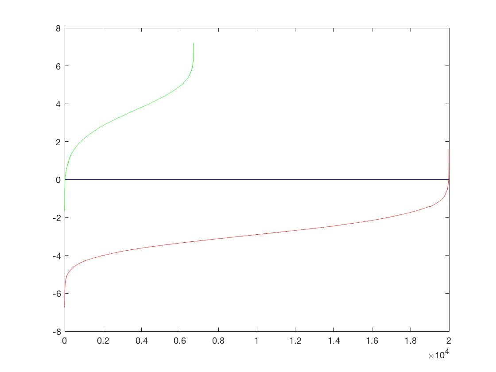
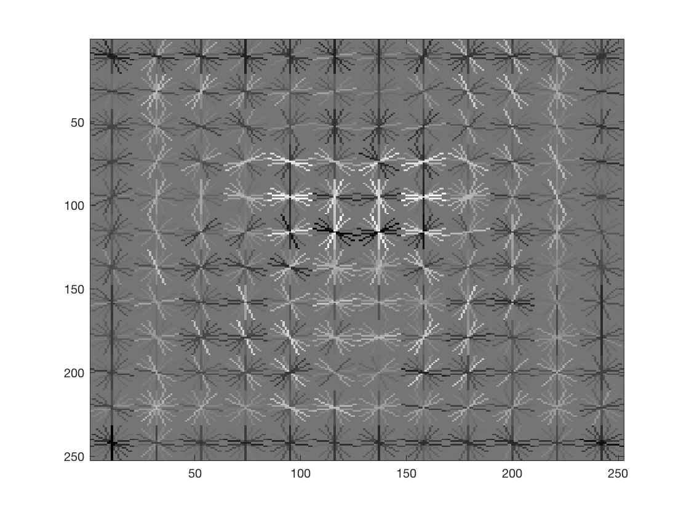
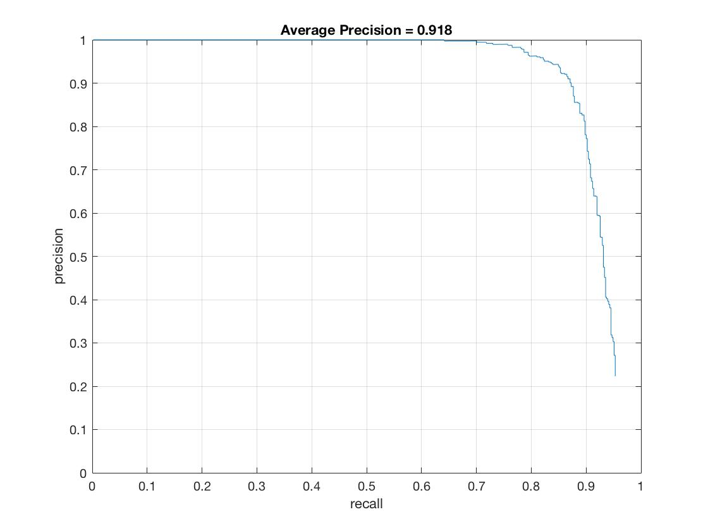
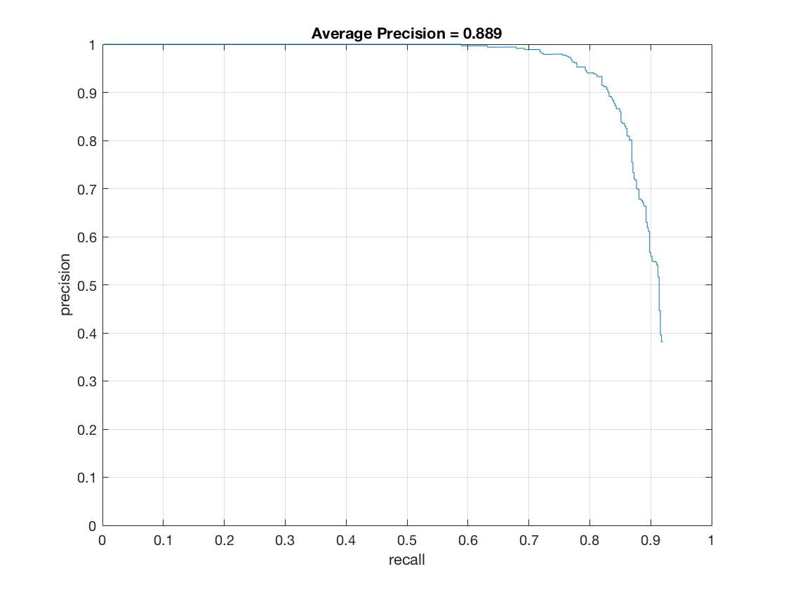
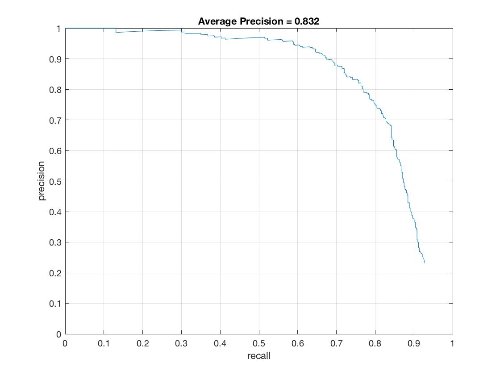
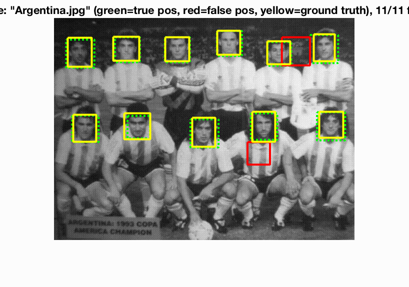
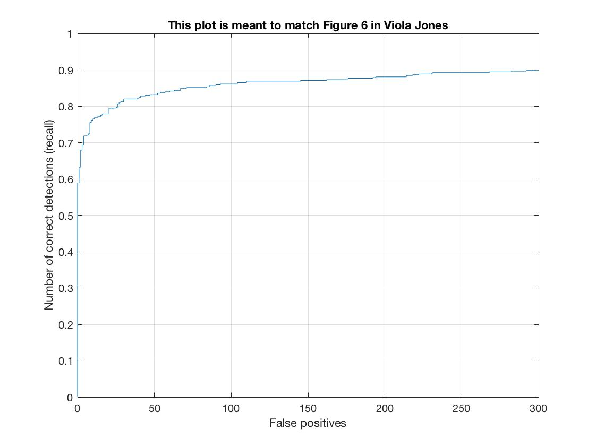

Fig:Detections on the extra image
Fig:Picard being detected
Project 5 requires us to implement a face detector. The detector is based on the concept be the sliding window and the image features are calculated using HOG features as illustrated in the paper by Dalal and Triggs 2005. The baseline model required us to implement a positive feature extractor from a provided face database consisting of 6713 cropped face images. Subsequently we had to use a database of non-face images to extract features from non-face images. We then had to use these features, both positive and negative to train an SVM to identify face images. Then we had to use the SVM and the concept of sliding window at different scales to identify face images in different test images which had ground truth to compare against.
Extracting positive features was easy. As mentioned earlier, we had 6713 face images from the Caltech database of 36x36 dimensions. The hog extractor function, vl_hog from the VLFeat library requires a HOG cell size along with the image. In this project, we noticed that smaller cell sizes give better accuracy but at the cost of time. I used the HOG cell size of 6 for debugging and later used 3 or 4 to get better performance.
We were given some 275 images to extract negative features. To train a resonalble SVM with a good number of negative examples, we needed at least 20000 samples. I decided to extract HOG features from these images at different scales. I reckoned, that the slowest step of this feature extraction process is to calculate the HOG features for each image. Insteat of selecting a random image and selecting a random scale and then calculating the HOG features for the scale image, I decided to select a predetermined selection of scales and calculate the number of samples I needed to collect per image per scale(num_pips). Then I would scale each image to all these scales, calculate HOG features and collect number calculated earlier (num_pips). This saves time overall as we collect more samples for each HOG feature calculation. The submitted code has two implementations of this code. 1, which calcuates HOG for each image at each scale, possibly multiple times and the second one which uses the the below mentioned pseudo code. We see significant improvement in running times. The first version of this code ran in 9 minutes while the newly updated version ran in ~ 54 seconds on my system.
num_pips = ceil(num_samples/(num_images * num_scales))
for i = 1:num_images
if samples_collected >= num_samples
break;
for j = scales % predetermined scales
img = images(i)
scale_image = imresize(img, j)
hog = vl_hog(scale_image, cell_size)
rows = size(hog, 1)
cols = size(hog, 2)
for k = 1:num_pips
n = randi([1, rows - window])
m = randi([1, cols - window])
features_neg(samples_collected, :) = reshape(hog(n:n+window-1, m:m+window-1, :), [feature_size, 1])
samples_collected++
We use the vl_svmtrain function from the VLFeat library to train an SVM with positive and negative examples extracted so far. Different lambda values were tried and I settled on lambda = 0.00001. A sanity check is ran to check the trained SVM against the training images we had provided to check if did everything right. The green line is the positive examples and the red line is the negative examples. The Y axis the SVM's evaluation of each example.
As explained in the orignial paper by Dalal and Triggs, we mine for hard negatives by running the evaluated SVM against the negative training set. Images evaluated to be above a certain threshold are retained and augmented (hard examples) to the original training set as negative examples to retrain the SVM with the same lambda. Although, this doee not give a huge performance boost to the final AP, it is an interesting experiment. The function written for hard negative mining takes in the non-face image directory, the calculated normal vector w and the bias b, the structure feature_params, the size of the feature vector space to ease with calculations, the max number of hard negatives to return and the threshold above which to consider features to be hard negatives. Each image in the non-face datbase is evaluated against the SVM at different scales by extracting HOG features at different scales and calculating the confidence,
hog = vl_hog(image, cell_size)
features = hog(:)
confidence = w*features' + b
if confidence > threshold
hard_negatives = hard_negatives + features;
Coding the detector was the most complex part of this project. The detector had to use a sliding window to detec faces. The pseudo code for the algorithm is as follows,
for each in test_image
for s = 1.2:-0.04:0.1
image = imresize(image, s)
hog = vl_hog(image, cell_size)
rows = size(hog, 1) - window
cols = size(hog, 2) - window
for k = 1:rows
for j = 1:cols
feature_set = hog(k:k+window - 1, j:j+window - 1, :)
confidence = feature_set(:) * w' + b
if (confidence > threshold)
coordinates = calculate_coordinates(k, j, cell_size)
bboxes = [bboxes; coordinates]
apply_non_maximal_supression(bboxes)
The most important param in this is the threshold value which is set to 0.0 for all detections.
Face Template HOG visualization at cell size 3
Precision Recall curve at HOG cell size 3 and threshold 0.01 and no hard negative mining. This pipelines takes around 22 mins to run on my system.

Precision Recall curve at HOG cell size 3 and threshold 0.01 and hard negative mining limited to 1000 features. Interestingly enough, the precision suffers.

Precision Recall curve at HOG cell size 6 and threshold 0.00 and no hard negative mining. This pipeline is much faster and takes around 4 minutes on my system. This is the setting of the submitted code.

Detections for the Argentina team. 
Viola Jones 